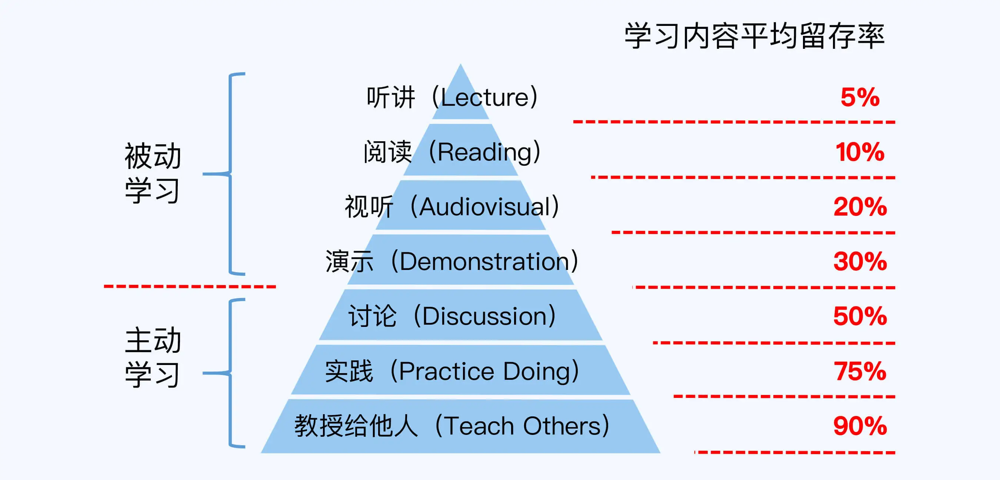

晋升指南笔记
COMD 能力模型
COMD, aka, Complexity-Oriented Multi-Dimension 多维度 + 复杂度
- 维度
- 业务
- 技术
- 管理
- 复杂度
- 规模, 多少人参与, 多少个系统, 多少个功能, 多少个业务
- 时间, 开发时间周期, 技术预测的周期(多长时间进行技术更替), 业务规划的时间(1年/3年的业务方向和战略)
- 环境, 稳定性(是否经常变化), 透明性(是否能及时获取到商业资讯) 和 可预见性(是否会发生无法预测的黑天鹅事件)
- 创新, 包括 理论创新(新理论 从0到1), 思想创新(新的思路思考问题) 和 技巧创新(非常规的细节和技巧)
简单归纳如下:
| 维度/复杂度 | 规模复杂度 | 时间复杂度 | 环境复杂度 | 创新复杂度 |
|---|---|---|---|---|
| 技术维度 | 代码量, 系统数量 | 预测x年内的技术发展 | 稳定性低，透明度高，可预见性高 | N/A |
| 管理维度 | 涉及到团队的个数, 团队的人数 | 项目的持续时间 | 稳定性高，透明度高，可预见性高 | N/A |
| 业务维度 | 功能点的个数, 业务方数量 | x年的业务规划 | 稳定性低，透明度低，可预见性低 | N/A |
所以，如果以上面的 COMD 能力模型来思考 企业的职级评定 和 个人的能力评定
企业维度
- 员工技术能力如何?(体现在之前做过的项目经历，工作时长，属于例行工作吗? 创新性如何?)
- 员工会管理吗? (管理了多少个团队, 或者管理了多少人? 主导什么样的项目?)
- 员工业务能力怎么样?(最复杂的业务是什么? 是否参与过业务规划? 对未来业务的定位和判断是什么)
个人维度
- 我的技术能力如何体现? (如何参与复杂的系统, 预测技术发展 和 进行技术创新)
- 我如何参与管理? (管理规模, 自我定位 和 时间分配)
- 我如何参与业务? (关键业务落地, x年业务规划如何制定? 如何进行业务创新)
Me?
- 我的技术能力如何体现?
- 从 0 到 1 的能力, 快速搭建一套完整的前后端系统, 包括 基础设施
- 在公司首席架构师带领下, 参与并主导了公司最复杂的系统: 角标系统的重构和落地(耗时1个月, 涉及三个部分的改造, 进行了技巧创新)
- 我如何参与管理?
- 管理过 13个人的团队, 在管理期间主导了招商的商家从 入驻 到 上架 商品的全流程的技术设计
- 数据中台服务, 涉及到 三个团队, 耗时两个月左右, 负责数据中心的整体建模, 方案设计和最终落地
- 我如何参与业务?
- 从 0 到 1 开启 西瓜AI 业务线, 推动力 西瓜AI 课 从 投放, 拉新, 课程涉及 和 课程续费 的完整落地
从上面的内容来看, 还是有很大的进步空间
P6~P9
| 职级 | 要求 | 技术-管理-业务比重 |
|---|---|---|
| P6 | 完成业务功能 | 10-0-0 |
| P7 | 管理1个团队中3~10人 | 7-2-1 |
| P8 | 管理一条业务线, 包括多个团队 | N/A |
| P9 | 管理一条事业部, 包括多个业务线 | N/A |
什么样的人/事/品质更容易晋升
- 主动做事
- 关注业务目标和业务数据
- 关注自己负责的系统的各种指标和数据(机房部署/QPS/SLI/SLO/LATENCY)
- 关注对外的时间承诺
- 关注主管的成长路径
- 主动找主管沟通
- 主动和业务沟通
这一块很多事情是偏沟通的, 主动找你的主管沟通, 主动了解所负责的业务的数据
- 成长原则
- 跳出舒适圈
- 定期复盘
复盘: 做的好的/不好的/不好的原因/改进的点/踩过的坑
- 价值原则
- 个人能力/影响力价值(主要在面试的时候展示)
- 业务价值(晋升时候展示)
需要分配好自身的时间, 不要在 看起来很重要但是对工作看来没有长远价值的事情 上花太多时间, 比如学习 编译原理, 算法导论, 每天刷 leecode 等等
绩效关注结果, 晋升关注能力的提升
通用步骤
PPT
基本认知
- 晋升需要有战功, 有绩效, 但是更重要的是突出 能力的提升, 即 能力已经到底 晋升的级别
- 内容需要丰富, 但是需要有重点, 不能过于累赘让别人抓不住重点
框架
自述材料
利用 金字塔原理 来描述做了什么。
技巧
- 将 PPT 当做 提词器 而不是演讲稿
-
内容和 目标职级 能力要求强相关
Me?
这个是非常大的教训，上次述职答辩时，过多地时间花在介绍业务的问题 和当前的现状上，而不是放在 我已经达到了XXX级别的要求 这一点上面。 最后获得的反馈是：
- 仿佛走错了片场，以为是产品的述职
- 你现在做的事情体现的能力，是你当前的职级的能力，你很棒，但是并未达到 XXX级别 的要求
- STAR(situation, task, action, result) 来描述论剧
- Task 和 Action 一定要注意原创性(也就是哪些是你做的, 项目的成功是否代表你本身非常厉害, 你在里面做了什么很重要)
- 注意业务质量的输出, 成果是什么(用绝对值, 用具体的金额)
- Result 一定要写的很具体
- 时间控制
- 提前预演(自己单独讲一遍, 拉上组内评审一遍)
- 用图来简化自己描述背景的时间
学习方法
海绵学习法-10000小时理论
每天一小时(早上半小时, 上班前半小时, 睡前半小时), 周末两小时
关键是要 可以坚持下来的方式, 其实就跟减肥健身差不多, 需要坚持, 以 5年, 10年的维度来看
规划/落地/输出
学习规划, 这里是更多指的是指阅读的规划
输出
- 名词和概念输出
- 文档/思考输出
- 分享
- 业务/实战
Me?
- 之前会为自己设计 知识树，尝试去整理当前需要的知识技能
- 会尝试去根据自己的短处去阅读一些书
- 自己的习惯是快速地读完一本书，拖得越久越无法落地
- 总结和整理比较少，主要是因为懒，还有就是因为不感兴趣，比如 TCP 三次握手/X次挥手
- 和学习技术相比起来，反而觉得自己在练琴上面更有目标感一些，制定的计划比较容易落地，有规划 输出 和 复盘
- 更多的深度思考，从深度(同主题)，宽度(同领域不同主题) 和 广度(不同领域) 去思考相同的问题
链式/比较/环式学习法
-
链式
解决深度问题, 问题往往是环环相扣的, 往往你看到的只是表象, 深层原因是更复杂的底层逻辑
- 领域维度(自顶向下)
graph LR; framework["语言框架"]; lang[编程语言]; sys[操作系统]; network[计算机网络]; tool[工具和配置]; core[操作系统内核]; framework-->lang-->sys-->network-->tool-->core;
- 细节维度(由表及里)
graph LR; interface[API接口]; theroy["设计原理(通用原理)"]; landing[设计方案]; sourceCode[源码实现]; interface-->theroy-->landing-->sourceCode;
Me?
- 个人喜欢的还是 细节维度。 比如我想看看 guava 缓存 的实现，我会
- 先去看有哪些接口
- 再去思考缓存的通用设计原理是什么，有哪些算法
- 再去看 guava 选择的设计方案 是什么
- 最后再去看缓存的核心源码实现
- 领域维度的层次太高了，好处是不会太纠结细节，缺点是没有那么有感觉，不太会总结或者说总结了之后也还是想知道细节
- 不过之后在学习一个技术知识的时候，需要思考:
- 自己是哪一种方式?
- 学习到哪一个层级了?
- 预期学到哪个层级?
- 如何将不同层级的不同知识点串起来，并应用到其他的场景中?
- 个人喜欢的还是 细节维度。 比如我想看看 guava 缓存 的实现，我会
链式学习, 越上层越偏应用, 底层偏原理。个人喜欢应用为主, 抓住主要的理论点即可
- 领域维度(自顶向下)
-
比较
简单来说, 在学习的时候带着这样的问题: 解决问题XXX, 为什么用 A方案, 而不用 B方案 这个问题。通过横向对比来学习不同解决方案的背后原理和适用范围
- 总结一个技术主题的 关键技术点 比如 redis 的 高可用, 高性能, 数据结构 和 功能 分别是什么
- 对比同类型产品/技术的 关键技术点 的差异
- 根据差异点, 总结不同技术下 的 背景原理 和 适用场景
-
环式
对于业务而言, 多画一下业务闭环流程图, 思考技术在各个环节的位置和所处的作用. 环式能让你更聚焦全局而不是个体
Me?
其实这块在晋升时候也有一些思考, 很多时候出现了 “没什么可讲”, “没什么可回答”, “没什么可思考” 的问题。 也就是说, 自己太过于关注自己的简单的研发工作了, 没有从点到面, 从面到框架的方式, 来思考自己的技术, 产品 和 业务。在不同深度，宽度 和 广度 思考问题。
Play & Tech
What I hear, I forget. What I see, I remember. What I do, I understand.
各种学习方式的留存效果

Me?
很真实啊，自己看 PPT 或者听一个讲座，远没有自己实践和分享来得多。将你知道的讲一遍给别人听，准备被提问的问题，这样的进步才会更显著一些。
这里的 Play 对应着 实践, Tech 对应着 教授他人.
- Play
- 试玩。手动搭建服务，弄清楚所有配置项的作用，以及为什么提供这样的功能
- 核心功能测试。
- 异常测试。包括边界测试和性能测试，测试在不同的场景(比如1C2G 下的机器? 10000QPS 并发?)下的服务反馈
- Tech
- 写作。写作最重要的是框架性，思考你传达的内容，先写框架，再写细节
- 培训。多准备一些问题，从深度，宽度和广度去提问和培训
规划-执行-复盘
规划
使用 OKR 而不是 KPI 进行规划, 使用 3C 来进行方案选择，问题思考 和 提问
- OKR, 价值的体现, 更注重(长期)结果和目标, 比如里程碑(系统从0到1, 解决技术债务等等)
-
KPI指标的体现, 更注重当前(短期)的任务是否达成, 对于一些创造性或者人性相关的工作内容时候, 往往容易跑偏 - OKR 和 KPI 的关系: KPI 可以作为 KR 的形式
- 3C方案设计, (业务/技术/管理)方案设计三个(3C, 3 choices)，也可以用在提问环节。
执行
使用 PDCA 来落地执行
-
Plan, 执行计划(短周期)
这里和 OKR 的区别是，OKR 是用来做长期规划的。 注意优先级，复杂的事情需要拆成小任务来处理，资源上有问题时，用上级的能力协调资源。
-
Do
做好信息同步，主要包括 进度，里程碑, 风险 和 问题，风险要提前告知，delay 多少天，就提前多少天告知。问题要提前暴露出来，及时同步解决的方案和解决的时间
-
Check
及时 check 进度, 使用 5W 来分析根因
-
Act
基于 Check 的结果，制定下一步的行动。这里需要总结和汇报结果，主要是看结果是否符合预期，是否有经验教训，挑选 3个 以内的内容进行落地即可
复盘
5W分析法
5W 可以用在 业务/技术/方案选择/管理 上，在进行链式学习的时候，也可以进行自我提问
注意: 需要聚焦在问题本身，不要变成杠精似地撕逼
4D总结法
4D, 4 dimensions
-
结果(价值)维度
价值是什么: 业务指标(销售额, 营业额)，技术指标(故障率, SLI/SLO) 和 管理指标(团队的开发效率)
-
数据维度
提升了开发效率，应该改为具体的 开发周期从 X 周减少到 Y 周, 人数从 X 人 减少到 X 人
注意: 这里的数据需要在不同的上下文有不同的意义, 比如当前用户数只要1000，提升 1000% 是很容易的, 但是 如果是当前的微信用户，用户数再提升 10% 都很难
-
技术维度
按照 链式/比较 学习法进行学习, 并用此总结经验和教训
-
成长维度
- 技术提升
- 业务理解
- 使用场景
- 目标用户
- 效果等等
- 管理技巧(项目组织, 沟通方式 和 做事技巧)
金字塔汇报
4D 总结法能让你客观地对自己和整个项目做完整的剖析和认知，但是会更多偏于细节，金字塔更多地是高维度地汇报，抓重点和关键点进行汇报
金字塔原理: 1中心, 3论点, 7论据 (1, 3, 7可以认为是 magic number)
论点, 输出 和 结果，要先阐述；论据，过程 和 内容 要后阐述(甚至不阐述)
内容结构
- 结论
- 简明概要
- 具体分析
- 细节数据
- 为什么是这样的数据
- 关键事项
- 业务架构图/技术架构图
- 阶梯图
- 时间线
四线复盘
- 时间线
- 问题链(5w分析法)
- 责任链
- 违反规范私自操作
- 问题源头
- 问题放大
- 改进线(可以落地的改进方案很重要)